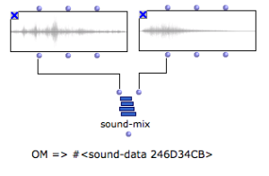

OpenMusic DocumentationHiérarchie de section : OM 6.6 User Manual > Audio > Sound Processing
OpenMusic DocumentationHiérarchie de section : OM 6.6 User Manual > Audio > Sound Processing
Navigation : page précédente | page suivante
Attention, votre navigateur ne supporte pas le javascript ou celui-ci à été désactivé. Certaines fonctionnalités de ce guide sont restreintes.
Sound Processing Functions
There exist a number of functions allowing to manipulate sound and audio data. A number of them are based on the underlying LibAudioStream library functionalities.
General Principles
The LibAudioStream library used by OM manipulates sound resources under the form of " streams ". Streams can be seen as abstact pointers representing a sound and possible transformations. In OM the LibAudioStream streams are embedded in a structure called SOUND-DATA. |

The SOUND-MIX function creates a SOUND-DATA pointer corresponding to the mix of two sounds.
|
SOUND-DATA pointers can eventually be rendered and converted back to sound file using the SAVE-SOUND function. |
SOUND-SAVE saves the result of SOUND-MIX into a new sound file. The new file is loaded in a SOUND box.
|
{kind=link}
Processing Functions
Below are listed the available sound processing functions. They all produce SOUND-DATA pointers.
SOUND-MIX : mixes two input sounds
SOUND-SEQ : concatenates two input sounds
SOUND-VOL : modifies the volume of an input sound
SOUND-CUT: extracts a specified interval out of an inpt sound
SOUND-FADE : adds a fade-in / fade-out effect to an input sound
SOUND-LOOP : repeats an input sound a number of times
SOUND-SILENCE : generates and empty (silent) sound of a given duration.
See the individual box documentation (press d) for more detailed descriptions.
Cascading Processes
The sound processing tools can also apply directly on SOUND-DATA pointers. It is therefore possible to apply sequences and combinations of effects and processes without using intermediary files.
SAVE-SOUND can be used eventually to store the final sound result in a sound file.
Cascading Sound Processing : An Algorithmic "Montage"
This example implements the following process :
|
{kind=link}
Automating Processing
The different programming facilities provided in OM (iterations, etc.) might be useful to automate sound processing on sound files and SOUND-DATA pointers.
REDUCE, MAPCAR...
In this example, we use higher-order functions in order to process lists of sound files and pointers.
(More advanced processed could be imagined, and implemented with abstractions or using an omloop). |
{kind=link}
Voir aussi
Références :
Plan :
- OpenMusic Documentation
- OM 6.6 User Manual
- Introduction
- System Configuration and Installation
- Going Through an OM Session
- The OM Environment
- Visual Programming I
- Visual Programming II
- Basic Tools
- Score Objects
- Maquettes
- Sheet
- MIDI
- Audio
- Sound Object
- Sound Editor
- Audio Player
- Sound Tools
- Sound Processing
- Recording
- External Libraries
- Audio Preferences
- SDIF
- Lisp Programming
- Errors and Problems
- OpenMusic QuickStart
Navigation : page précédente | page suivante
A propos...(c) Ircam - Centre Pompidou